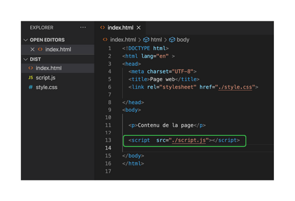
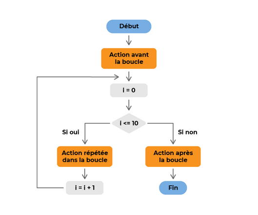
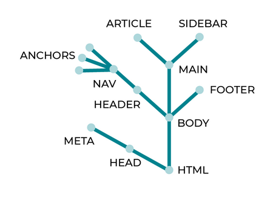

Envie d'apprendre le langage Javascript, pas de soucis :D :
Pour aller directement sur la partie du JavasScript pour le Web, cliques ici :)
------------>Le Javascript pour le Web<-----------
Déclaration des variables
Un programme utilise des variables pour enregistrer et manipuler des données.
Petit rappel :
- Une variable est un contenant utilisé pour enregistrer une donnée spécifique dont notre programme a besoin pour travailler; Un nom d'utilisateur, le nombre de billets restants pour un vol, la disponibilité ou non d'un certain produit en stock, toutes ces données sont enregistrées dans des variables.
- Une donnée placée dans une variable s'appelle une valeur.
Quelques conseils à ce propos :
- Utiliser des noms descriptifs et clairs dans le code : Plutôt que qty ou quantity, il vaut mieux que la variable s'appelle quantityInStock si elle définit la quantité d'un stock par exemple.
- Éviter les noms raccourcis de variable comme annuelRes au lieu de annuelReservation car on s'y perd vite
- Suivre une convention de nommage constante : La convention de nommage la plus courante est camel case; Dans cette convention, les noms sont constitués de plusieurs mots dont l'initiale est en capitale, par exemple numberOfCats, finalAnswer
Création de variable
En JavaScript, la déclaration d'une variable se limite au mot-clé let, suivi du nom de variable, exemple :
let numberOfCats = 2; let numberOfDogs = 4;
Cela a donc créé et initialisé deux variables.
Modification de variable
Pour modifier la valeur d'une variable, on la réaffecte :
numberOfCats = 4;
Donc si on crée la variable et qu'on l'initialise, mais qu'ensuite on veut la réaffecter, le code sera :
let numberOfCats = 3; numberOfCats = 4;
Les opérateurs
Pour créer une variable à partir de deux variables additionnées, on utilise le signe +, exemple :
let totalCDs = 67; let totalVinyls = 34; let totalMusic = totalCDs + totalVinyls;
À l'inverse, pour créer une variables à partir de la soustraction de deux variables, on utilise le signe -, exemple :
let cookiesInJar = 10; let cookiesRemoved = 2; let cookiesLeftInJar = cookiesInJar – cookiesRemoved;
Pour ajouter ou soustraire un nombre d'une variable, on utilise les opérateurs += et -=, exemple :
let cookiesInJar = 10; /* on mange deux cookies */ cookiesInJar -= 2; //il reste 8 cookies /* cuisson d'un nouveau lot de cookies */ cookiesInJar += 12; // il y a maintenant 20 cookies dans la boîte
Enfin, on peut utiliser ++ ou -- pour ajouter ou soustraire 1 (incrément ou décrément), exemple :
let numberOfLikes = 10; numberOfLikes++; // cela fait 11 numberOfLikes--; // et on revient à 10
Les opérations de multiplication et de division utilisent les opérateurs * et /, exemple :
let costPerProduct = 20; let numberOfProducts = 5; let totalCost = costPerProduct * numberOfProducts; let averageCostPerProduct = totalCost / numberOfProducts;
Comme pour l'addition et la soustraction, il existe aussi les opérateurs *= et /= pour multiplier ou diviser un nombre :
let numberOfCats = 2; numberOfCats *= 6; // numberOfCats vaut maintenant 2*6 = 12; numberOfCats /= 3; // numberOfCats vaut maintenant 12/3 = 4;
On pourrait donc obtenir un premier script comme suit :
let numberOfSeasons = 6; let numberOfEpisodes = 12; let episodeTime = 45; let commercialTime = 5; let totalShowTime = (episodeTime + commercialTime) * numberOfSeasons * numberOfEpisodes;
Mutabilité des variables
Une variable est de base mutable c'est-à-dire qu'elle peut changer au cours du temps.
On la déclare avec le mot-clé let suivi d'un nom de variable et on lui affecte une valeur de départ.
Par la suite, on va pouvoir changer la valeur de cette variable autant de fois que l'on souhaite.
Par exemple, on crée un compteur à 0, et, à chaque fois qu'on clique sur un bouton on augmente la valeur de 1 pour connaître à tout instant le nombre de clics réalisés, depuis le début de l'exécution du code, exemple :
let compteur = 0; compteur++; compteur = 10;
Les constantes
Dans de nombreux programmes, certaines données ne seront pas modifiées pendant l'exécution du programme, c'est le cas par exemple du nom d'une entreprise, de la date de naissance d'un utilisateur, ou du nombre d'heures dans une journée.
Pour s'assurer de ne pas réaffecter par inadvertance de nouvelles valeurs à ces données, on va utiliser des constantes.
Ce sont simplement des variables qui ne seront pas mutables.
On donnera une valeur de départ et on ne pourra plus changer la valeur par la suite.
Ainsi s'il y a une erreur de logique dans notre code changeant la valeur de la variable constante qui ne devait pas changer, javascript retournera une erreur, par exemple :
const nombrePostParPage = 20; nombrePostParPage = 30; // Retournera une erreur dans la console car on ne peut plus changer sa valeur
Les types de données
Le type d'une variable ou d'une constante est le genre des données qu'elle enregistre.
En JavaScript, il y a trois types primitifs principaux :
- number : Nombre
- string : Chaîne de caractères
- boolean : Valeur logique
Les number :
Attention au calcul avec les nombres à virgule, elle peut déclencher des erreurs :
let integerCalculation = 1 + 2; // donne 3 let weirdCalculation = 0.1 + 0.2; // on attend 0.3, réponse réelle 0.30000000000000004
Chaque fois que c'est possible, il faut utiliser des entiers.
Les boolean :
Elles ne peuvent avoir que deux valeurs, true ou false, on s'en sert par exemple pour savoir si une case est cochée ou non, si un utilisateur est connecté ou non, ou si un ensemble de conditions particulières est réuni, exemple :
let userIsSignedIn = true let userIsAdmin = false;
Les string :
Elles permettent d'enregistrer du texte, n'importe quel caractère et peut contenir plus de 134 millions de caractères.
Elles sont encadrées par des guillemets simples ou doubles ‘ ou “.
Exemple :
let firstName = "Clémentine"; let lastName = 'Degaine';
Les chaînes peuvent aussi être concaténées (ajoutées à la fin l'une de l'autre) par l'opérateur +, exemple :
let wholeName = firstName + " " + lastName; // valeur: "Clémentine Degaine"
Il est possible depuis quelques années d'utiliser une nouvelle écriture qui simplifie la concaténation des variables et des chaînes de caractère : la string interpolation.
Pour créer une string interpolation on écrit du texte encadrée par le signe ` (cote oblique) et si on veut injecter une variable dans ce code on utilise l'expression ${maVariable}, exemple :
const myName = `Antoine`; const salutation = `Bienvenue sur mon site ${myName}!`; console.log(salutation); //retournera “Bienvenue sur mon site Antoine!”
Les objets et les classes
Les objets JavaScript sont écrits en JSON (JavaScript Object Notation).
Ce sont des séries de paires clés-valeurs séparées par des virgules, entre des accolades.
On pourrait déclarer chaque objet avec ses valeurs (une fiche sur une personne par exemple, avec son nom son prénom etc.. serait un objet), mais si les objets ont toujours les mêmes clés, on a pas fini (imaginons créer un objet par personne sur un forum, on déclarerait donc la paie clés-valeurs à chaque fois, pour chaque personne), heureusement on peut déclarer d'emblée une classe qui définit le point commun (les clés) des objets, et on peut ensuite y affecter facilement les valeurs.
Pour chaque classe, on pourra donc faire des associations avec les valeurs ensuite (la fiche de telle ou telle personne), c'est ce qu'on appelle des instances de la classe (la fiche de Clémentine sera donc une instance de la classe Fiche).
Déclaration d'un objet
Les objets peuvent être enregistrés dans une variable, exemple :
let myBook = { title: 'The Story of Lutins', author: 'Antoine et Clémentine', numberOfPages: 250, isAvailable: true };
Chaque clé est une chaîne (title, author, numberOfPages...), et les valeurs associées peuvent avoir tout type de données (nombre, chaîne, etc.).
Construire des objets présente un avantage essentiel, cela permet de regrouper les attributs d'une chose unique à un même emplacement, que ce soit un livre, un profil d'utilisateur ou la configuration d'une application, par exemple.
Accéder aux données d'un objet
Il est possible d'accéder aux données dans un objet avec la notation pointée (dot notation).
Pour cela, utiliser le nom de la variable qui contient l'objet, un point (.), puis le nom de la clé dont on souhaite récupérer la valeur.
Exemple :
let myBook = { title: “The Story of Lutins”, author: “Antoine et Clémentine”, numberOfPages: 250, isAvailable: true }; let bookTitle = myBook.title; // "The Story of Lutins" let bookPages = myBook.numberOfPages // 250
La notation bracket (bracket notation) :
Pour accéder à un sous élément on peut utiliser les brackets avec la valeur du sous élément, par exemple :
let myBook = { title: “The Story of Lutins”, author: “Antoine et Clémentine”, numberOfPages: 250, isAvailable: true }; let bookTitle = myBook["title"]; // "The Story of Lutins" let bookPages = myBook["numberOfPages"]; // 250
L'intérêt ici c'est qu'on va pouvoir mettre entre bracket une variable qui contient en string le nom de la propriété que l'on souhaite atteindre, par exemple :
let myBook = { title: “The Story of Lutins”, author: “Antoine et Clémentine”, numberOfPages: 250, isAvailable: true }; let propertyToAccess = "title"; let bookTitle = myBook[propertyToAccess]; // "The Story of Lutins"
Déclaration d'une classe
La construction d'un objet à la main, par la notation à accolades vue précédemment, convient bien à des objets simples et uniques.
Mais on aura souvent besoin de beaucoup d'objets du même type (comme l'histoire des fiches de personnes comme expliqué précédemment), c'est là que les classes sont utiles.
Une classe est un modèle pour un objet dans le code.
Elle permet de construire plusieurs objets du même type (appelés instances de la même classe) plus facilement, rapidement et en toute fiabilité.
Pour créer une classe en JavaScript, utiliser le mot-clé class, suivi par un nom.
Encadrer ensuite le code de la classe entre accolades, exemple :
class Book { }
Pour cette classe, nous souhaitons que chaque Book ait un titre, un auteur et un nombre de pages.
Pour cela, on va utiliser ce qu'on appelle un constructor.
Le constructor d'une classe est la fonction qui est appelée quand on crée une nouvelle instance de cette classe avec le mot-clé new.
class Book { constructor(title, author, pages) { } }
Il y a un ensemble d'instructions à suivre à l'intérieur du constructor pour créer une instance de la classe Book.
Pour attribuer le titre, l'auteur et le nombre de pages reçus à cette instance, utiliser le mot-clé this et la notation dot, exemple :
class Book { constructor(title, author, pages) { this.title = title; this.author = author; this.pages = pages; } }
Ici, le mot-clé this fait référence à la nouvelle instance, donc, il utilise la notation dot pour attribuer les valeurs reçues aux clés correspondantes.
Maintenant que la classe est terminée, on peut créer des instances par le mot-clé new :
let myBook = new Book("L'Histoire des Lutins", "Antoine et Clémentine", 250);
Cette ligne crée l'objet suivant :
{ title: "L'Histoire des Lutins", author: "Antoine et Clémentine", pages: 250 }
Avec cette classe Book , on peut créer facilement et rapidement de nouveaux objets Book .
Les tableaux
Imaginons que nous soyons responsable de la communication d'un théâtre.
Une de nos responsabilités est la gestion du premier rang, qui revient à s'assurer que les amis et connaissances des artistes, ainsi que d'autres VIP, aient la meilleure vision du spectacle.
Si nous n'avions à gérer que deux invitations pour l'artiste principal, nous pourrions imaginer utiliser seulement deux variables avec les noms des invités, le code pourrait se présenter comme ceci :
let firstFrontRowGuest; let secondFrontRowGuest;
Ensuite, quand l'artiste nous donne l'information, nous pourrions nous contenter d'affecter un nom à chaque variable, par exemple :
firstFrontRowGuest = "Clémentine Degaine"; secondFrontRowGuest = "Blandine Tardieu";
Mais si le premier rang a 30 sièges ?
Ne serait-il pas plus facile d'utiliser une seule variable contenant toutes ces informations ?
Il existe un type pour cela en JavaScript : Le tableau (array).
Créer un tableau et accéder aux éléments
Pour créer un tableau vide et l'enregistrer dans une variable, utiliser une paire de crochets :
let guests = [];
On peut aussi créer un tableau rempli en plaçant les éléments voulus à l'intérieur de ces crochets :
let guests = ["Clémentine Degaine", "Blandine Tardieu", "Erell Quere"];
On peut ensuite accéder aux éléments de ce tableau par leur indice :
let firstGuest = guests[0]; // "Clémentine Degaine" let thirdGuest = guests[2]; // "Erell Quere" let undefinedGuest = guests[12] // undefined
Ne pas oublier de commencer à l'indice 0 !
Utiliser des valeurs plutôt que des références
En JavaScript, les types primitifs tels que les nombres, les valeurs logiques et les chaînes sont passés par valeur.
Ceci signifie que, quand on fait quelque chose comme :
let numberOfGuests = 20; let totalNumberOfGuests = numberOfGuests; // 20
... c'est la valeur 20 qui est copiée dans la nouvelle variable (totalNumberOfGuests), et aucun lien n'est maintenu entre les deux variables.
Ce n'est pas le cas avec les objets et tableaux, qui sont passés par référence.
Si on y prend pas garde, cela peut conduire à des comportements inattendus, par exemple :
let artistProfile = { name: "Clémentine Degaine", age: 27, available: true }; let allProfiles = [artistProfile]; // nouveau tableau contenant l'objet ci-dessus artistProfile.available = false; // modification de l'objet console.log(allProfiles) // affiche { nom: "Clémentine Degaine", âge: 27, disponible: false }
Bien que nous ayons créé le tableau et passé l'objet avant la modification de cet objet, on la voit dans le tableau.
C'est parce que lorsqu'on utilise des tableaux et des objets, on passe des références aux objets plutôt que la valeur des données qu'ils contiennent.
Les variables artistProfile et allProfiles présentées ci-dessus contiennent des références à l'objet et au tableau en mémoire.
Travailler sur les tableaux
Les tableaux sont très puissants et ont beaucoup d'attributs et de méthodes utiles, voici quelqu'uns d'entre eux :
- Le comptage d'éléments
La propriété length d'un tableau indique le nombre d'éléments qu'il contient :let guests = ["Clémentine Degaine", "Blandine Tardieu", "Erell Quere"]; let howManyGuests = guests.length; // 3
Utiliser la notation dot pour accéder à la propriété length du tableau. - L'ajout et la suppression d'éléments
- Pour ajouter un élément à la fin d'un tableau, utiliser la méthode push :
guests.push("Antoine Giraud"); // ajoute "Antoine Giraud" à la fin de notre tableau guests.
On peut en effet utiliser la notation dot pour accéder à la méthode push du tableau, et placer l'élément à ajouter entre parenthèses. - Pour ajouter l'élément au début du tableau plutôt qu'à la fin, utiliser la méthode unshift :
guests.unshift("Antoine Giraud"); // "Antoine Giraud" est ajouté au début du tableau guests
- Pour supprimer le dernier élément d'un tableau, appeler la méthode pop, sans passer aucun argument :
guests.pop(); // supprime le dernier élément du tableau
- Pour ajouter un élément à la fin d'un tableau, utiliser la méthode push :
Utilisation du JavaScript dans JSBIN, les pages Web et les serveurs
L'avantage du JavaScript, c'est que ce langage nous permet de programmer dans de nombreux environnements différents.
Il faut cependant garder en tête que la façon d'exécuter le code est légèrement différente dans chaque environnement.
Nous allons ici explorer brièvement trois environnements différents : JSBin, les pages web et les serveurs.
- JSBIN
JSBin est un excellent outil pour tester des extraits de code en JavaScript.
Dans JSBin, on peut écrire du code ligne par ligne dans le volet JavaScript, et utiliser le bouton Run pour l'exécuter.
JSBin parcourt alors nos lignes de code et les exécute l'une après l'autre; L'ordre est donc important.
Par exemple, ce morceau de code :let numberOfGuests = 20; console.log(numberOfGuests); // 20
...n'est pas identique à :console.log(numberOfGuests); // undefined let numberOfGuests = 20;
- Écrire du code pour des pages Web
Un fichier HTML, un fichier CSS, un fichier JavaScript, et c'est parti !
Exemple :
C'est plus ou moins de cette façon que JavaScript fonctionne sur le web.
On écrit du code JavaScript, on l'enregistre dans un ou plusieurs fichiers, puis on importe ces fichiers par une balise spéciale dans le fichier HTML.
Le navigateur exécute ensuite automatiquement le code dans ces fichiers, en général dans l'ordre de leur importation. - Écrire du code pour des serveurs
Il fut un temps où JavaScript ne pouvait s'utiliser que dans des pages web (en avant-plan), mais ce n'est plus vrai; Il peut maintenant aussi s'utiliser en arrière-plan, pour gérer l'accès à certaines ressources.
Prenons par exemple un service de messagerie mail.
Nous avons une page web qui nous permet d'accéder à nos messages, mais ils ne sont pas enregistrés dans cette page.
Ils sont enregistrés dans une base de données, et la page que nous utilisons accède à cette base de données à travers un serveur, qui peut être écrit en JavaScript.
Néanmoins, les serveurs doivent être actifs à tout moment, et seuls certains éléments de code doivent être exécutés à certains moments.
Par exemple, le code qui nous permet d'accéder à nos messages ne doit être exécuté que lorsque nous décidons d'ouvrir notre client de messagerie !
Dans ce cas, un environnement (tel que Node), couplé à un code JavaScript particulier, fait que cela se produit.
Le serveur réagit à notre ouverture du client de messagerie, vérifie l'authentification et envoie nos messages.
Les conditions
Le déroulement du programme est un terme général qui décrit l'ordre dans lequel s'exécutent les lignes de code.
Cela signifie que certaines lignes seront lues une seule fois, certaines plusieurs fois, et d'autres complètement ignorées, selon la situation.
On va donc devoir s'intéresser aux instructions conditionnelles (une instruction conditionnelle est une instruction qui vérifie si certaines conditions sont réunies).
La condition if/else
En JavaScript, si on utilise des boolean (bouléens, en français) simples pour les instructions if / else, la syntaxe se présente comme suit :
if (myBoolean) { // réaction à la valeur vraie de myBoolean } else { // réaction à la valeur faux de myBoolean }
Donc, pour vérifier si un utilisateur est connecté, on procède comme suit :
let UserLoggedIn = true; if (UserLoggedIn) { console.log("Utilisateur connecté!"); } else { console.log("Alerte, intrus!"); }
Dans le cas ci-dessus, on obtiendra l'impression sur la console de "Utilisateur connecté!", car le boolean userLoggedIn a la valeur true.
S'il avait la valeur false, on obtiendrait à la place "Alerte, intrus!".
Les expressions et opérateurs logiques
Plutôt qu'une simple variable logique dans une condition if / else, on peut aussi utiliser des expressions de comparaison, qui comparent des valeurs entre elles.
Les expressions de comparaison nous permettent de comparer deux valeurs par les opérateurs suivants :
- < : Inférieur à
- <= : Inférieur ou égal à
- == : Égal à
- >= : Supérieur ou égal à
- > : Supérieur à
- != : Différent de
Par exemple :
const numberOfSeats = 30; const numberOfGuests = 25; if (numberOfGuests < numberOfSeats) { // autoriser plus d'invités } else { // ne pas autoriser de nouveaux invités }
On peut aussi chaîner les instructions if / else pour réagir à des conditions potentielles multiples, exemple :
if (numberOfGuests == numberOfSeats) { // tous les sièges sont occupés } else if (numberOfGuests < numberOfSeats) { // autoriser plus d'invités } else { // ne pas autoriser de nouveaux invités }
Le chaînage d'instructions permet de prévoir différents résultats en fonction des différentes situations.
En JavaScript, toutes les égalités ne sont pas nées égales.
Il y a deux façons de vérifier si deux valeurs sont égales en JavaScript : == et ===, aussi appelées égalité simple et égalité stricte :
- L'égalité simple vérifie la valeur, mais pas le type
Donc ceci renvoie la valeur true :5 == "5"
- L'égalité stricte vérifie à la fois la valeur et le type
Donc ceci renvoie false, car on compare un number à un string :5 === "5"
De même, il y a deux opérateurs d'inégalité, != et !==, avec la même distinction.
Dans certaines situations, on souhaite vérifier plusieurs conditions pour un même résultat, par exemple dans la même instruction if.
Pour cela, il existe des opérateurs logiques :
- && : ET logique, pour vérifier si deux conditions sont toutes les deux vraies
- || : OU logique, pour vérifier si au moins une condition est vraie<
- ! : NON logique, pour vérifier si une condition n'est pas vraie
Exemple :
let userLoggedIn = true; let UserHasPremiumAccount = true; let userHasMegaPremiumAccount = false; userLoggedIn && userHasPremiumAccount; // true userLoggedIn && userHasMegaPremiumAccount; // false userLoggedIn || userHasPremiumAccount; // true userLoggedIn || userHasMegaPremiumAccount; // true !userLoggedIn; // false !userHasMegaPremiumAccount; // true
Bien sûr, ces opérateurs peuvent être mélangés et combinés en fonction de nos besoins précis.
Le scope des variables
En JavaScript, les variables créées par let ou const ne peuvent être vues ou utilisées qu'à l'intérieur du bloc de code dans lequel elles sont déclarées (lorsqu'elles sont déclarées dans un bloc).
On rencontrera certainement le mot-clé var pour la création de variables, les variables déclarées ainsi n'ont pas un scope de bloc mais un scope de fonction, donc elles n'ont pas tout à fait le même comportement (pour plus d'informations : https://www.geeksforgeeks.org/difference-between-var-and-let-in-javascript/)
Un bloc de code, aussi appelé bloc tout court, est une section de code incluse entre accolades {}.
Ce phénomène est appelé portée des variables ou block scope (en anglais), voici un exemple :
let userLoggedIn = true; if (userLoggedIn) { let welcomeMessage = 'Welcome back!'; } else { let welcomeMessage = 'Welcome new user!'; } console.log(welcomeMessage); // renvoie une erreur
Dans ce code, nous avons deux blocs de code issus de l'instruction if / else.
Ces deux blocs déclarent une variable par let welcomeMessage, néanmoins, ces variables ne sont disponibles qu'à l'intérieur des blocs où elles sont déclarées.
C'est pourquoi, quand on essaie d'afficher le contenu de welcomeMessage sur la console, on obtient une erreur, pour le code en dehors des blocs (aussi appelé portée extérieure ou parente), il n'y a pas de variable welcomeMessage.
Pour cette situation, une méthode pourrait être de déclarer la variable dans la portée extérieure, puis de la modifier à l'intérieur des blocs if / else :
let userLoggedIn = true; let welcomeMessage = ''; // déclarer la variable ici if (userLoggedIn) { welcomeMessage = 'Welcome back!'; // modifier la variable extérieure } else { welcomeMessage = 'Welcome new user!'; // modifier la variable extérieure } console.log(welcomeMessage); // imprime 'Welcome back!'
Ici, du fait que la variable soit déclarée dans le scope parent, elle est disponible et accessible partout, et peut être modifiée correctement.
La condition switch
Si on souhaite vérifier la valeur d'une variable par rapport à une liste de valeurs attendues, et réagir en conséquence, on utilisera l'instruction switch.
Par exemple pour un affichage de message personnalisé en fonction du type de compte de chaque objet utilisateur, on aura le code suivant :
let firstUser = { name: "Clémentine Degaine", age: 33, accountLevel: "normal" }; let secondUser = { name: "Blandine Tardieu", age: 21, accountLevel: "premium" }; let thirdUser = { name: "Antoine Giraud", age: 27, accountLevel: "mega-premium" }; switch (firstUser.accountLevel) { case 'normal': console.log('You have a normal account!'); break; case 'premium': console.log('You have a premium account!'); break; case 'mega-premium': console.log('You have a mega premium account!'); break; default: console.log('Unknown account type!'); }
Après le code à exécuter dans chaque instruction case, il faut ajouter l'instruction break.
Si on ne le fait pas, JavaScript continuera l'exécution des cas suivants (en cascade) jusqu'à rencontrer une instruction break ou la fin de l'instruction switch.
On peut aussi ajouter un cas default qui ne sera exécuté que si la variable que nous vérifions ne correspond à aucune des valeurs répertoriées.
Le switch peut servir dans différents cas mais surtout rendre plus facile à lire l'enchaînement de condition if / else.
Par exemple voici comment on aurait écrit l'exemple précédent avec des if / else :
if (firstUser.accountLevel === 'normal' ) { console.log('You have a normal account!'); } else if (firstUser.accountLevel === 'premium' ) { console.log('You have a premium account!'); } else if (firstUser.accountLevel === 'mega-premium' ) { console.log('You have a mega premium account!'); } else { console.log('Unknown account type!'); }
Les boucles
En programmation, il y a des ensembles d'instructions à répéter plusieurs fois.
Parfois, on va connaître à l'avance le nombre de répétitions, d'autres fois non.
Il est aussi possible que le nombre de fois n'importe pas, et que l'on souhaite répéter le code jusqu'à atteindre une certaine condition. Pour tous ces cas, nous utiliserons des boucles.
La boucle for
Utiliser une boucle for pour savoir “combien de fois”.
Supposons que nous ayons à faire embarquer 10 passagers, et que pour l'instant nous n'accordions pas d'importance à l'ordre de leur embarquement.
Utilisons une boucle for pour les embarquer un par un jusqu'à atteindre 10 :
const numberOfPassengers = 10; for (let i = 0; i < numberOfPassengers; i++) { console.log("Passager embarqué !"); } console.log("Tous les passagers sont embarqués !");
Pour cette boucle for, nous créons une variable d'indice i qui sert de compteur pour le nombre d'exécutions de la boucle.
C'est pour cette raison qu'elle démarrera à zéro, car on n'a pas encore parcouru la boucle.
La deuxième commande dans les parenthèses for est la condition de poursuite de la boucle.
Dès qu'elle s'évalue comme false, on quitte la boucle, dans ce cas, on souhaite l'exécuter autant de fois qu'il y a de passagers, donc quand l'indice i atteint 10 (après 10 boucles), on souhaite l'arrêter, car il n'y a plus de passager.
La troisième commande demande à la boucle for d'incrémenter i (ajouter 1) à chaque exécution; C'est ce qui permet de suivre le nombre d'exécutions de la boucle.
A chaque passage de la boucle, on aura le message "Passager embarqué !"”".
Enfin, un fois que l'on sort de la boucle, on a le message "Tous les passagers sont embarqués !".
Voici un schéma récapitulatif :

En bref dans la boucle for on a :
- Initilisation de la variable
- Condition
- Incrémentation
Cette solution est pratique mais si on souhaite utiliser un tableau de passager pour les embarquer dans un ordre précis, on devra le parcourir.
L'ancienne façon de paroucrir le tableau dans une boucle avec for, serait d'utiliser la propriété length.
Exemple pour un tableau appelé passengers :
for (let i = 0; i < passengers.length; i++) { console.log("Passager embarqué !"); }
Bien que ceci fonctionne, il y a deux façons plus faciles de parcourir en boucle des tableaux (ou de faire une itération sur leurs éléments).La boucle for... in
La boucle for... in est très comparable à l'exemple de boucle for normale, mais elle est plus facile à lire, et effectue tout le travail d'itération pour nous :
const passengers = [ "Clémentine Degaine", "Blandine Tardieu'", "Antoine Giraud", "Cyril Coulon" ] for (let i in passengers) { console.log("Embarquement du passager " + passengers[i]); }
Comme dans l'exemple précédent, i démarre automatiquement à zéro, et s'incrémente à chaque boucle.
Nous imprimons donc passengers[0], puis passengers[1], puis passengers[2], etc.., jusqu'à terminer l'itération sur tous les passagers.
Nous pouvons bien sûr imprimer chaque élément sur la console, car chacun est une chaîne contenant le nom du passager.
La boucle for... of
Pour les cas où l'indice précis d'un élément n'est pas nécessaire pendant l'itération, on peut utiliser une boucle for... of :
En reprenant l'exemple précédent et en utilisant à la place une boucle for... of , on obtient :
const passengers = [ "Clémentine Degaine", "Blandine Tardieu'", "Antoine Giraud", "Cyril Coulon" ] for (let passenger of passengers) { console.log("Embarquement du passager " + passenger); }
Ceci produit exactement le même résultat, mais de façon plus lisible, car on a pas à nous inquiéter des indices et des tableaux, on reçoit simplement chaque élément dans l'ordre.
C'est encore plus utile si le tableau est un peu plus complexe et contient par exemple des objets :
const passengers = [ { name: "Clémentine Degaine", ticketNumber: 209542 }, { name: "Blandine Tardieu", ticketNumber: 169336 }, { name: "Antoine Giraud", ticketNumber: 779042 }, { name: "Cyril Coulon", ticketNumber: 703911 } ] for (let passenger of passengers) { console.log('Embarquement du passager ' + passenger.name + ' avec le ticket numéro ' + passenger.ticketNumber); }
La boucle while
Une boucle while vérifie si une condition est vraie.
Si c'est le cas, la boucle se poursuit ; sinon elle s'arrête.
En revenant à l'exemple de l'embarquement d'avion : Supposons que nous ayons des variables représentant le nombre de sièges restants et le nombre de passagers restants. Nous souhaitons continuer l'embarquement jusqu'à l'épuisement du nombre de sièges ou de passagers :
let seatsLeft = 10; let passengersStillToBoard = 8; let passengersBoarded = 0; while (seatsLeft > 0 && passengersStillToBoard < 0) { passengersBoarded++; // un passager embarque passengersStillToBoard--; // donc il y a un passager de moins à embarquer seatsLeft--; // et un siège de moins } console.log(passengersBoarded); // imprime 8, car il y a 8 passagers pour 10 sièges
Cette boucle while poursuit son exécution jusqu'à ce que l'un des nombres seatsLeft et passengersStillToBoard atteigne zéro, et à ce point elle se termine.Les erreurs
On distingue souvent trois types d'erreurs dans les langages de programmation.
- Les erreurs de syntaxes
Elles surviennent quand on fait une faute d'écriture dans notre code, que ce soit un oubli ou l'ajout d'un crochet ou d'une accolade, d'une faute d'orthographe sur un mot-clé, else ou switch par exemple.
Heureusement les éditeurs de texte ou d'environnements de développement intégrés (IDE : Integrated Development Environment, est un logiciel fournissant un ensemble d'outils aux développeurs, généralement spécifique à un langage, à une architecture ou à un domaine, comme Visual Studio Code) mettent automatiquement en évidence les erreurs de syntaxe. - Les erreurs logiques
Elles surviennent quand on a fait des erreurs dans la logique de notre programme, comme l'affectation d'une valeur erronée à une variable, un mélange de conditions dans les instructions if, ou encore un ordre incorrect d'écriture des lignes ou des blocs de code.
Avec ce genre d'erreur, notre programme pourra avoir un comportement inattendu dans le meilleur des cas, ou planter dans le pire des cas !
Les erreurs logiques sont plus difficiles à trouver et à corriger parce que le code n'est pas faux, il ne fait simplement pas ce que l'on souhaite qu'il fasse. - Les erreurs d'exécution
Elles tendent à survenir quand quelque chose d'inattendu se produit dans notre application.
Il s'agit souvent de quelque chose associé aux ressources extérieures (connexions réseau, appareils physiques, etc.) ou à une saisie/erreur humaine.
Il y a des situations où nous savons par avance que ce type d'erreur est susceptible de survenir. Dans ces situations, nous pouvons prévoir du code de traitement d'erreur, de cette façon, une erreur ne fera pas planter notre programme, et pourra être corrigée.
Une façon de traiter les erreurs potentielles consiste à utiliser une instruction if / else pour vérifier la validité des données, exemple :if (dataExists && dataIsValid) { // utiliser les données ici } else { // gérer l'erreur ici }
Nous pouvons aussi utiliser des blocs try / catch pour essayer (try) un code pouvant potentiellement renvoyer une erreur, et détecter (catch) les erreurs éventuelles survenues, exemple :try { // code susceptible à l'erreur ici } catch (error) { // réaction aux erreurs ici }
Les fonctions
Une fonction est un bloc de code auquel on attribue un nom.
Quand nous appelons cette fonction, nous exécutons le code qu'elle contient.
Comme par exemple la fonction console.log qui contient du code permettant d'imprimer sur la console (afficher sur la console).
Nous pouvons créer n'importe quelle fonction nous même, exemple :
// On définit la fonction function afficherDeuxValeurs(valeur1, valeur2) { console.log('Première valeur:' + valeur1); console.log('Deuxième valeur:' + valeur2); } // On exécute la fonction afficherDeuxValeurs(12, 'Bonjour'); // On obtient dans la console // > Première valeur:12 // > Deuxième valeur:Bonjour
Beaucoup de fonctions ont besoin de variables pour effectuer leur travail.
Quand on crée/déclare une fonction, on indique la liste des variables dont elle a besoin pour effectuer son travail : On définit les paramètres de la fonction.
Ensuite, à l'appel de la fonction, on lui attribue des valeurs pour ses paramètres.
Les valeurs sont les arguments d'appel.
Enfin, notre fonction peut nous donner un résultat : Une valeur de retour.
Supposons que nous ayons une fonction qui compte le nombre de mots dans une chaîne :
- Le paramètre sera une chaîne dont nous allons compter les mots
- L'argument sera donc toute chaîne attribuée à notre fonction quand on l'appelle
- La valeur de retour sera le nombre de mots
Les instances et les propriétés
Petit rappel sur la notion de propriété de classe :
C'est une variable interne à cette classe que l''on peut définir par défaut et faire évoluer au fur et à mesure de l'exécution de notre code.
Il n'est pas rare d'utiliser le terme attribut au lieu de propriété, mais cela représente bien la même chose.
Prenons l'exemple d'une classe qui représenterait un compte bancaire, et que l'on appellerait BankAccount.
On pourrait trouver comme propriétés owner (permettant d'identifier le propriétaire du compte) et balance (permettant de connaître le montant disponible sur le compte).
Ainsi, lorsque que l'on crée une instance de BankAccount avec un propriétaire et un montant initial en argument, on pourra exploiter par la suite ces propriétés pour afficher leurs valeurs, les utiliser pour des calculs, les modifier, etc.
Les méthodes d'instances
Nous avons précédemment vu que les classes étaient utilisées pour créer des objets ayant certaines propriétés.
Maintenant que nous avons vu les fonctions, nous allons pouvoir ajouter des méthodes d'instance à ces classes pour augmenter leur puissance et leur utilité.
Une méthode d'instance est une fonction faisant partie d'une classe, et qui agit sur une instance de cette classe.
Reprenons notre exemple de classe BankAccount (compte bancaire) :
class BankAccount { constructor(owner, balance) { this.owner = owner; this.balance = balance; } }
Nous pouvons ensuite créer une instance de cette classe appelée newAccount (nouveau compte) :
const newAccount = new BankAccount("Clémentine Degaine", 50000);
N'oublions pas qu'un objet (une instance d'une classe est un objet) est un type par référence, donc on peut toujours apporter des modifications à l'instance de newAccount, la partie constante désigne une référence à cette instance.
Telle quelle, l'instance n'est pas très utile.
Nous pourrions afficher son solde à la console par newAccount.balance, mais si on pensait plutôt à ajouter une mise en forme ? On peut pour cela ajouter une méthode à la classe.
class BankAccount { constructor(owner, balance) { this.owner = owner; this.balance = balance; } showBalance() { console.log("Solde: " + this.balance + " EUR"); } }
La nouvelle méthode ci-dessus, déclarée par son nom suivi par (), utilise le mot-clé this pour accéder à la propriété balance de l'instance, et l'afficher sur la console avec une mise en forme supplémentaire.
Ceci signifie que l'on peut utiliser la notation dot sur l'instance newAccount pour appeler sa méthode showBalance() :
const newAccount = new BankAccount("Clémentine Degaine", 50000); newAccount.showBalance(); // imprime "Solde: 50000 EUR" à la console
On peut aussi ajouter des méthodes capables de modifier les propriétés de l'instance.
Dans ce cas, ajouter les méthodes deposit() (dépôt) et withdraw() (retrait) à la classe, en n'oubliant pas que les deux ont besoin d'un paramètre amount (montant) (parce que nous devons savoir combien déposer ou retirer) :
class BankAccount { constructor(owner, balance) { this.owner = owner; this.balance = balance; } showBalance() { console.log("Solde: " + this.balance + " EUR"); } deposit(amount) { console.log("Dépôt de " + amount + " EUR"); this.balance += amount; this.showBalance(); } withdraw(amount) { if (amount > this.balance) { console.log("Retrait refusé !"); } else { console.log("Retrait de " + amount + " EUR"); this.balance -= amount; this.showBalance(); } } }
La méthode deposit() affiche le montant du dépôt sur la console, ajoute le montant au solde de l'instance, puis appelle la méthode showBalance() de l'instance, imprimant ainsi le nouveau solde sur la console.
Les méthodes statiques
Il existe un type spécial de méthode pouvant être ajoutée à une classe : La méthode statique.
Elle est différente des méthodes d'instance parce qu'elle n'est pas liée à une instance particulière d'une classe, mais à la classe elle-même.
Utilisons-la pour créer des méthodes utilitaires (helper en anglais) où nous n'aurons pas besoin d'une instance d'une classe pour les utiliser.
Nous pourrons nous en servir comme boîte à outils de fonctions que nous utiliserons souvent.
Par exemple, en JavaScript, l'objet Math contient beaucoup de méthodes utiles :
const randomNumber = Math.random(); // crée un nombre aléatoire sur l'intervalle [0, 1] const roundMeDown = Math.floor(495.966); // arrondit vers le bas à l'entier le plus proche, renvoie 495
Nous n'avons pas besoin de créer par new une instance de l'objet Math pour utiliser ces méthodes, il suffit de les appeler sur l'objet Math global.
Nous pouvons créer nos propres méthodes statiques par le mot-clé static.
Observons la classe suivante :
class BePolite { static sayHello() { console.log("Hello!"); } static sayHelloTo(name) { console.log("Hello " + name + "!"); } static add(firstNumber, secondNumber) { return firstNumber + secondNumber; } } BePolite.sayHello(); // imprime "Hello!" BePolite.sayHelloTo("Lutine"); // imprime "Hello Lutine!" const sum = BePolite.add(2, 3); // sum = 5Nous n'avons pas besoin d'ajouter un constructor à notre classe, car nous n'allons pas l'instancier.
Nous avons une méthode qui :
- Imprime un message générique
- Accepte un argument et l'utilise pour créer un message
- Renvoie une valeur à partir des arguments que nous lui envoyons
Toutes ces fonctionnalités pourraient être des fonctions, mais l'avantage d'utiliser des méthodes de classe statiques est par exemple de pouvoir les regrouper par catégorie ou par type.
Propreté du code
La propreté du code est importante, que ce soit une fonction trop longue qui pourrait être fractionnée en plusieurs petites fonctions qui seront appelées dans une autre fonction, que ce soit l'indentation ou la factorisation du code lorsque c'est possible, ou les commentaires, il y a différentes techniques permettant de rendre le code plus lisible pour soi et pour les autres.
Factorisation
Si on se retrouve à écrire plusieurs fois le même code, on devrait probablement le refactoriser dans une fonction, exemple :
if (firstUser.online) { if (firstUser.accountType === "normal") { console.log("Hello " + firstUser.name + "!"); } else { console.log("Welcome back premium user " + firstUser.name + "!"); } } if (secondUser.online) { if (secondUser.accountType === "normal") { console.log("Hello " + secondUser.name + "!"); } else { console.log("Welcome back premium user " + secondUser.name + "!"); } } if (thirdUser.online) { if (thirdUser.accountType === "normal") { console.log("Hello " + thirdUser.name + "!"); } else { console.log("Welcome back premium user " + thirdUser.name + "!"); } }
Ici nous répétons la même tâche plusieurs fois, pour des utilisateurs différents, une bonne occasion de factoriser le code dans une fonction :
const sendWelcomeMessageToUser = (user) => { if (user.online) { if (user.accountType === "normal") { console.log("Hello " + user.name + "!"); } else { console.log("Welcome back premium user " + user.name + "!"); } } } sendWelcomeMessageToUser(firstUser); sendWelcomeMessageToUser(secondUser); sendWelcomeMessageToUser(thirdUser);
Nous avons créé une fonction sendWelcomeMessageToUser (un nom qui exprime clairement ce que fait la fonction) et l'avons appelée pour chaque utilisateur.
Dans ce cas, nous avons réduit la quantité de code de 23 lignes à 13, tout en le rendant plus lisible.
râce à un nom de fonction descriptif, nous pouvons indiquer que nous envoyons un message de bienvenue à trois utilisateurs.
Avec des fonctions qui ne font qu'une seule chose (et dont le nom décrit ce qu'elles font), nous pouvons rendre notre code bien plus propre et plus facile à comprendre, voyons la fonction suivante :
const printStringStats = (stringToTest) => { const wordArray = stringToTest.split(" "); const wordCount = wordArray.length; let letterCount = 0; for (let word of wordArray) { word.replace(/[.,\/#!$%\^&\*;:{}=\-_`~()]/g, ""); letterCount += word.length; } const averageWordLength = parseFloat((letterCount / wordCount).toFixed(2)); const stringStats = { wordCount: wordCount, letterCount: letterCount, averageWordLength: averageWordLength }; console.log(stringStats); }
Bien qu'il y ait un nom descriptif, et que nous puissions voir qu'il s'agit d'imprimer le nombre de mots, le nombre de lettres et la longueur moyenne des mots d'une chaîne, il se passe tellement de choses qu'il est difficile de suivre si on ne comprend pas chaque ligne.Cette fonction fait trop de choses d'un coup.
Voyons maintenant cette refactorisation :
const getWordCount = (stringToTest) => { const wordArray = stringToTest.split(" "); return wordArray.length; } const getLetterCount = (stringToTest) => { const wordArray = stringToTest.split(" "); let totalLetters = 0; for (let word of wordArray) { word.replace(/[.,\/#!$%\^&\*;:{}=\-_`~()]/g, ""); totalLetters += word.length; } return totalLetters; } const getAverageWordLength = (stringToTest) => { return parseFloat((getLetterCount(stringToTest) / getWordCount(stringToTest)).toFixed(2)); } const printStringStats = (stringToTest) => { console.log({ wordCount: getWordCount(stringToTest), letterCount: getLetterCount(stringToTest), averageWordLength: getAverageWordLength(stringToTest) }) }
Bien que cette version soit plus longue, il y a trois fonctions getWordCount (qui renvoie le nombre de mots), getLetterCount (qui renvoie le nombre de lettres) et getAverageWordLength (qui renvoie la longueur moyenne des mots), appelées par la fonction printStringStats (qui imprime les statistiques de la chaîne de caractères).
Nous pouvons ne pas comprendre la complexité de chaque fonction, mais nous pouvons bien comprendre ce qui se passe parce qu'elles ne font qu'une seule chose, mentionnée dans leur nom.
On pourrait utiliser les fonctions individuelles sans avoir besoin de savoir ce qui se passe sous le capot.
Les commentaires
Il y a deux types de commentaires, sur une seule ligne et sur plusieurs lignes, et chacun a sa place.
Ajoutons des commentaires à notre exemple précédent :
const getWordCount = (stringToTest) => { const wordArray = stringToTest.split(' '); return wordArray.length; } const getLetterCount = (stringToTest) => { const wordArray = stringToTest.split(' '); let totalLetters = 0; for (let word of wordArray) { // retire la ponctuation pour ne compter que les lettres word.replace(/[.,\/#!$%\^&\*;:{}=\-_`~()]/g, ""); totalLetters += word.length; } return totalLetters; } /* ** renvoie la longueur moyenne des mots ** arrondie à deux chiffres après la virgule */ const getAverageWordLength = (stringToTest) => { return parseFloat((getLetterCount(stringToTest) / getWordCount(stringToTest)).toFixed(2)); } const printStringStats = (stringToTest) => { console.log({ wordCount: getWordCount(stringToTest), letterCount: getLetterCount(stringToTest), averageWordLength: getAverageWordLength(stringToTest) }) }
Le commentaire sur une seule ligne explique la raison de l'appel, d'apparence complexe, à la fonction replace.
Le commentaire sur plusieurs lignes explique que la longueur moyenne du mot sera renvoyée à 2 décimales près, car ce n'est pas immédiatement apparent.
Les conventions de nommage
- Comme nous l'avons vu jusqu'à présent, les noms de variable et de fonction dans JavaScript sont généralement écrits en "camel case" minuscule (getWordCount, numberOfCats), alors que les noms de classe sont écrits en "camel case" majuscule (PremiumAccount, SpecialGuest).
On est pas obligé d'utiliser cette convention, néanmoins, elle facilite la lecture de notre code car elle est respectée par la grande majorité des développeurs. - Des noms clairs et descriptifs pour les variables et les fonctions sont plus faciles à lire que des noms raccourcis, obscurs ou aléatoires.
Choisir nos noms avec attention, et notre code sera clair et facile à lire (et nous n'aurons plus à écrire autant de commentaires !).
L'indentation
Tabulations ou espaces ? Deux espaces ou quatre ? Quel que soit notre choix, garder le même style partout.
Le positionnement des acolades est également important, il faut rester dans la même cohérence dans le code.
Les tests
Il y a trois types essentiels de tests :
- Les tests unitaires
Il vérifie des unités individuelles (des fonctions uniques ou des classes) en leur fournissant une entrée et en s'assurant qu'elles donnent la sortie attendue.
En général, chaque unité est testée sur un cas simple, puis sur un ou plusieurs cas limites, exemple :const getWordCount = (stringToTest) => { const wordArray = stringToTest.split(' '); return wordArray.length; } const getLetterCount = (stringToTest) => { const wordArray = stringToTest.split(' '); let totalLetters = 0; for (let word of wordArray) { word.replace(/[.,\/#!$%\^&\*;:{}=\-_`~()]/g, ""); totalLetters += word.length; } return totalLetters; }
Ici on pourrait tester :
- getWordCount : En vérifiant une chaîne dont on connaît le nombre de mots (cas simple), puis peut-être une chaîne vide, et une chaîne qui ne contiendrait que des espaces (cas limite).
- getLetterCount : On pourrait vérifier une chaîne dont on connaît le nombre de lettres (cas simple), puis essayer une chaîne ne contenant que des signes de ponctuation (cas limite).
On pourrait donc écrire ces tests comme code accessoire :const testSimpleWordCount = () => { const testString = 'I have four words!'; if (getWordCount(testString) !== 4) { console.error('Simple getWordCount failed!'); } } const testEdgeWordCount = () => { const testString = ' '; if (getWordCount(testString) !== 0) { console.error('Edge getWordCount failed!'); } } const testSimpleLetterCount = () => { const testString = 'I have twenty one letters!'; if (getLetterCount(testString) !== 21) { console.error('Simple getLetterCount failed!'); } } const testEdgeLetterCount = () => { const testString = '")(&;//!!'; if (getLetterCount(testString) !== 0) { console.error('Edge getLetterCount failed!'); } }
Ce sont des tests simples, et ils peuvent convenir pour des vérifications rapides, mais il est généralement préférable d'utiliser une architecture de test.
Les architectures et bibliothèques de test permettent d'écrire automatiquement des suites de tests complètes de notre code, à l'aide de fonctions et de syntaxe spécifiques.
Voici à quoi pourraient ressembler les deux tests ci-dessus dans certaines architectures :describe('getWordCount()', function() { it('should find four words', function() { expect(getWordCount('I have four words!').to.equal(4)); }); it('should find no words', function() { expect(getWordCount(' ').to.equal(0)); }); });
Les tests unitaires constituent généralement entre 60 et 80 % de l'ensemble des tests des projets JavaScript; Mais il existe d'autres tests, comme les tests d'intégration. - Les tests d'intégration
Les tests d'intégration vérifient les multiples fonctions ou classes pour s'assurer qu'elles travaillent ensemble comme elles sont censées le faire.
En effet séparément elles peuvent fonctionner, mais ensemble elles pourraient ne pas fonctionner. - Les tests fonctionnels
Les tests fonctionnels, aussi appelés de bout en bout (E2E), vérifient des scénarios complets en contexte.
Par exemple, un utilisateur se connecte à notre application, ouvre ses notifications et les marque toutes comme lues.
Ces tests vérifient aussi les ressources externes que notre projet peut utiliser, par exemple un système de paiement tiers.
Il existe différents frameworks dédiés aux tests unitaires et fonctionnels pour les applications JavaScript frontend et/ou backend.
On retrouve souvent les frameworks Jasmine, mocha.js, Mocha, etc.
Déboguer notre fonction
Quand quelque chose ne va pas dans notre projet, il peut être difficile de savoir ce qui s'est passé.
Voici quelques techniques pour nous aider à remettre les choses d'aplomb.
Afficher la console
Exemple de version défectueuse :
const getWordCount = (stringToTest) => { const wordArray = stringToTest.split(''); return wordArray.length; }
Pour une raison quelconque, cette fonction renvoie des valeurs curieuses; Utilisons un affichage de console pour voir ce qui se passe :
const getWordCount = (stringToTest) => { const wordArray = stringToTest.split(''); console.log("Word array in getWordCount: "); console.log(wordArray); return wordArray.length; }
Maintenant voyons ce qui se passe à l'appel suivant, sur la console :
getWordCount('I am a fish'); /* la console montre : "Word array in getWordCount:" ["I", " ", "a", "m", " ", "a", " ", "f", "i", "s", "h"] */
Plutôt que de répartir la chaîne en mots, elle la répartit en lettres !
Une observation plus attentive de la fonction montre une erreur à l'appel de split : Ce devrait être stringToTest.split(' '), et non pas stringToTest.split('').
Utiliser des outils pour développeur
Pour écrire du JavaScript pour des sites web, on peut utiliser les outils pour développeur intégrés dans les quatre navigateurs essentiels : Chrome, Firefox, Safari et Edge.
Chaque navigateur contient un système qui nous permet d'ajouter des points d'arrêt pas-à-pas (breakpoints) à notre code.
Quand le navigateur arrive sur un point d'arrêt de notre code, il met l'exécution en pause, ce qui nous permet de parcourir l'exécution ligne après ligne, en vérifiant les valeurs des variables à chaque étape.
Nous pouvons même ignorer certains morceaux de code si nous souhaitons voir comment notre appli y réagit.
La plupart des environnements de développement intégrés comportent aussi un débogueur, qui nous permet de tout déboguer dans notre espace de travail.
Cela peut être pratique, en particulier si notre code ne doit pas s'exécuter sur une page web et ne peut pas être vérifié dans le navigateur.
Un environnement de développement intégré les plus courants est Visual Studio Code (gratuit).
La récursivité
Une fonction récursive est une fonction qui s'appelle elle-même d'une façon ou d'une autre.
Exemple : Nous souhaitons chercher un élément dans un array trié pour savoir s'il s'y trouve.
Une approche basique serait la suivante :
const findElement = (array, thingToFind) => { for (let element of array) { if (element === thingToFind) { return true; } } return false; }
On avance, élément par élément, dans le tableau.
Si on trouve un élément qui correspond à ce que l'on recherche, la fonction renvoie true.
Si on arrive à la fin du tableau sans l'avoir trouvé, on passe à la ligne suivante et la fonction renvoie false.
C'est plutôt clair comme approche, mais c'est lent !
Le temps pris pour chaque recherche se prolonge de manière linéaire avec des listes plus longues !
Imaginons une autre approche :
const binarySearch = (array, thingToFind, start, end) => { }
On sait que le tableau est trié, donc on peut savoir, pour un élément donné, si ce que l'on recherche risque de se trouver plus haut ou plus bas dans la liste.
Par exemple, si on recherche le nombre 42 et que l'on tombe sur 32, on sait qu'il faudra chercher plus bas.
Du coup, commençons par analyser l'élément médian de la liste.
On peut faire la somme de l'index de début et de l'index de fin, et diviser par deux pour trouver cet élément (arrondissons vers le bas pour nous assurer de trouver un nombre entier :
{ let mid = Math.floor((start + end) / 2); }
Mais pourquoi utiliser les index de début et de fin plutôt que la propriété length du tableau ?
Utiliser les index nous permettra de réutiliser le même code sur des sélections de plus en plus petites du tableau.<§
Maintenant que l'on a l'élément médian du tableau, vérifions si, par chance, on est tombé juste.
const binarySearch = (array, thingToFind, start, end) => { let mid = Math.floor((start + end) / 2); if (array[mid] === thingToFind) { return true; } }
La fonction retournera true si on a trouvé l'élément.
Si on a pas eu de chance, ce n'est pas grave, puisque le tableau est trié, on sait dans quelle moitié du tableau chercher !
Du coup, on a juste à exécuter exactement la même fonction sur la partie en question !
Il suffit de modifier soit l'index de fin (pour chercher dans la première moitié) soit l'index de début (pour chercher dans la deuxième moitié) :
const binarySearch = (array, thingToFind, start, end) => { let mid = Math.floor((start + end) / 2); if (array[mid] === thingToFind) { return true; } if (thingToFind < array[mid]) { // il faut rechercher dans la première moitié return binarySearch(array, thingToFind, start, mid - 1); // on utilise (mid - 1) car on sait que l'on n'a pas besoin de l'élément mid, il a déjà été vérifié ! } else { // il faut rechercher dans la deuxième moitié return binarySearch(array, thingToFind, mid + 1, end); } }
La fonction continuera à s'appeler elle-même jusqu'à trouver ce que l'on recherche.
Mais il manque quelque chose : Qu'est-ce qui se passe si ce que l'on recherche n'existe pas dans le tableau ?
Il faut ce que l'on appelle un cas de base, ou base case, pour dire à la fonction de s'arrêter.
On saura que l'algorithme est arrivé au bout si on a essayé de l'appeler avec un index de début qui est supérieur à l'index de fin.
Pourquoi ? Eh bien parce que peu à peu, on divise le tableau, encore et encore, jusqu'à tomber sur une sélection d'un seul élément : on aura donc start = mid = end.
Du coup, quand la fonction se rappellera encore, elle utilisera soit start = mid + 1, soit end = mid - 1, selon notre recherche.
On aura donc start > end, et la fonction peut retourner false, car on sait qu'elle est arrivée au bout sans trouver ce que l'on recherche.
On met donc ce base case au début de la fonction pour vérifier s'il s'agit du dernier appel :
{ if (start > end) { return false; } let mid = Math.floor((start + end) / 2); if (array[mid] === thingToFind) { return true; } if (thingToFind < array[mid]) { return binarySearch(array, thingToFind, start, mid - 1); } else { return binarySearch(array, thingToFind, mid + 1, end); } }
Et voilà ! Une fonction récursive, qui s'appelle elle-même, qui effectue une recherche d'élément dans un tableau trié, et qui renvoie true si l'élément s'y trouve, ou false s'il ne s'y trouve pas (grâce au base case) !
ATTENTION ! Sans base case (ou avec un base case incorrect), nos fonctions récursives peuvent causer des infinite loops et des stack overflows, car elles vont continuer à s'appeler à l'infini, donc faire bien attention !
Le JavaScript pour le Web
Grâce au JavaScript on va pourvoir amener un bon côté dynamique au site !Le DOM
Le DOM, (Document Object Model, c'est-à-dire "modèle d'objet de document", en français), est une interface de programmation qui est une représentation du HTML d'une page web et qui permet d'accéder aux éléments de cette page web et de les modifier avec le langage JavaScript.
Il faut voir le DOM comme un arbre où chaque élément peut avoir zéro ou plusieurs enfants, qui peuvent avoir eux-mêmes zéro ou plusieurs enfants, qui peuvent avoir zéro ou plusieurs...
Dans le DOM, on commence toujours par un élément racine qui est le point de départ du document : la balise <html>.
Celle-ci a pour enfants les balises <head> et <body> qui ont donc un parent commun : la balise <html>.
On trouvera ensuite le contenu de notre page dans la balise <body> sous forme de liens, boutons, blocs, etc..

Concrètement, à quoi va nous servir le DOM ? Avec une interface de programmation nous permettant de parcourir le DOM, nous allons pouvoir interagir avec lui; Ces interactions comprennent :
- La modification du contenu d'un élément précis
- La modification du style d'un élément
- La création ou la suppression d'élément
- L’intéraction avec les utilisateurs, afin de repérer des clics sur un élément ou encore de récupérer leur nom dans un formulaire
- Etc ..
Accéder aux éléments du DOM
Le document
Tout commence avec le document.
Cet objet, auquel nous avons directement accès dans notre code JavaScript, est le point de départ du DOM, il représente notre page (notre document) entière.
C'est donc lui qui contient les fonctions dont nous aurons besoin pour retrouver les éléments que nous cherchons.
Voici les principales fonctions de recherche d’éléments du DOM :
- document.getElementById()
C'est sûrement la méthode la plus utilisée pour retrouver un élément, car c'est aussi la seule qui nous permette de retrouver facilement un élément précis.
Comme son nom l'indique, elle va rechercher un élément grâce à son id.
Pour rappel il ne doit y avoir qu'un seul élément avec un id donné, cette méthode est donc une candidate parfaite pour retrouver un élément particulier.
getElementById(<id>) prend en paramètre l'id de l'élément que nous recherchons et nous retournera cet élément s'il a été trouvé.
Par exemple, si l'on part du code HTML suivant :<p id="my-anchor">My content</p>
.. on pourra trouver cet élément avec le code JavaScript suivant :const myAnchor = document.getElementById('my-anchor');
- document.getElementsByClassName()
Cette méthode fonctionne de la même manière que la précédente, mais fera sa recherche sur la class des éléments et retournera la liste des éléments qui correspondent.
getElementsByClassName(<classe>) prend en paramètre la classe des éléments à rechercher et vous retournera une liste d'éléments correspondants.
Par exemple, si l'on part du code HTML suivant :<div> <div class="content">Contenu 1</div> <div class="content">Contenu 2>/div> <div class="content">Contenu 3</div> </div>
.. on pourra retrouver la liste des éléments ayant la classe content avec le code JavaScript suivant :const contents = document.getElementsByClassName('content'); const firstContent = contents[0];
- document.getElementsByTagName()
Avec cette méthode, on recherchera tous les éléments avec un nom de balise bien précis (par exemple tous les liens (a), tous les boutons (button), etc ..).
De la même manière que la méthode précédente, on récupérera la liste des éléments correspondants.
getElementsByTagName(<name>) prend en paramètre le nom de la balise à rechercher et nous retournera la liste des éléments correspondants.
Si l'on part du code HTML suivant :<div> <article>Contenu 1</article> <article>Contenu 2</article> <article>Contenu 3</article> </div>
.. on pourra retrouver la liste des éléments de type article avec le code JavaScript suivant :const articles = document.getElementsByTagName(<article>); const thirdArticle = articles[2];
- document.querySelector()
Cette méthode est plus complexe, mais aussi beaucoup plus puissante car elle nous permet de faire une recherche complexe dans le DOM, en mélangeant plusieurs procédés.
Il s'agit d'un sélecteur qui permet de cibler certains éléments.
Par exemple,document.querySelector("#myId p.article > a") fera une recherche dans l'élément ayant pour id #myId, les éléments de type <p> qui ont pour classe article, afin de récupérer le lien (<a> ) qui est un enfant direct (pas des enfants de ses enfants).
Ainsi, avec le code HTML suivant :<div id="myId"> <p> <span><a href="#">Lien 1</a></span> <a href="#">Lien 2</a> <span><a href="#">Lien 3</a></span> </p> <p class="article"> <span><a href="#">Lien 4</a></span> <span><a href="#">Lien 5</a><</span> <a href="#">Lien 6</a> </p> <p> <a href="#">Lien 7</a> <span><a href="#">Lien 8</a></span> <span><a href="#">Lien 9</a></span> </p> </div>
la recherche JavaScript suivante :const elt = document.querySelector("#myId p.article > a");
.. nous retournera uniquement Lien 6 - querySelector()
Ne renvoie pas une liste des résultats, mais le ,premier élément qui correspond à la recherche.
querySelector(<selector>) prend en paramètre le sélecteur et nous retournera le premier élément trouvé<, ou null si aucun élément n'a été trouvé.
Les recherches depuis un élément
Il n'y a pas qu'avec document que nous pouvons rechercher des éléments.
Chaque élément est un objet JavaScript avec ses propriétés et ses fonctions, et parmi ces dernières, il en existe pour parcourir les enfants et le parent de chaque élément.
- element.children : Cette propriété nous retourne la liste des enfants de cet élément
- element.parentElement : Cette propriété nous retourne l'élément parent de celui-ci
- element.nextElementSibling / element.previousElementSibling : Ces propriétés nous permettent de naviguer vers l'élément suivant / précédent de même niveau que notre élément
Par exemple, avec le code HTML suivant :
<div id="parent"> <div id="previous">Précédent</div> <div id="main"> <p>Paragraphe 1</p> <p>Paragraphe 2</p> </div> <div id="next">Suivant</div> </div>
.. et si l'on considère que nous avons le code JavaScript suivant :
const elt = document.getElementById('main');
.. nous aurons ceci :
- elt.children nous retournera les éléments de type p qui sont les enfants de l'élément #main
- elt.parentElement nous retournera la div qui a l'id parent
- elt.nextElementSibling nous retournera l'élément qui a l'id next
- elt.previousElementSibling nous retournera l'élément qui a l'id previous
Modifier les éléments du DOM
Modifier le contenu d’un élément
innerHTML et textContent sont les deux propriétés principales permettant de modifier le contenu d’un élément.
innerHTML demande à ce que nous entrions du texte représentant un contenu HTML.
Par exemple : "<p>Voici un exemple de contenu pour <strong>innerHTML</strong></p>" .
La propriété textContent, quant à elle, demande un simple texte qui ne sera pas interprété comme étant du HTML.
Si on reprend l'exemple du dessus, le mot innerHTML ne sera pas en gras, et les balises HTML seront visibles comme le reste du texte.
Définir une valeur à innerHTML ou textContent remplace directement le contenu actuel de l'élément par celui que l’on précise.
Par exemple, avec le code JavaScript suivant :
let elt = document.getElementById('main'); elt.innerHTML = "<ul><li>Elément 1</li><li>Elément 2</li></ul>";
L'élément qui a l'id 'main' aura un nouveau contenu; Le HTML deviendra donc :
<div id="main"> <ul> <li>Elément 1</li> <li>Elément 2</li> </ul> </div>
Modifier des classes
La propriété classList permet d’accéder directement à la liste es classes d’un élément<, elle fournit aussi une série de fonctions permettant de modifier cette liste de classes, en voici quelques-unes :
- add(<string>, [<string>, ...]) : Ajoute la ou les classes spécifiées
- remove(<string>, [<string>, ...]) : Supprime la ou les classes spécifiées
- contains(<string>) : Vérifie si la classe spécifiée est contenue par cet élément
- replace(<old>, <new>) : Remplace l'ancienne classe par la nouvelle classe
Exemple :
elt.classList.add("nouvelleClasse"); // Ajoute la classe nouvelleClasse à l'élément elt.classList.remove("nouvelleClasse"); // Supprime la classe nouvelleClasse que l'on venait d'ajouter elt.classList.contains("nouvelleClasse"); // Retournera false car on vient de la supprimer elt.classList.replace("oldClass", "newClass"); // Remplacera oldClass par newClass si oldClass était présente sur l'élément
Changer les styles d’un élément
Avec la propriété style, on peut récupérer et modifier les différents styles d'un élément.
style est un objet qui a une propriété pour chaque style existant.
Par exemple, pour modifier la couleur d'arrière-plan d'un élément, nous ferons :
element.style.backgroundColor = '#000';
Voici quelques exemples :
elt.style.color = "#fff"; // Change la couleur du texte de l'élément à blanche elt.style.backgroundColor = "#000"; // Change la couleur de fond de l'élément en noir elt.style.fontWeight = "bold"; // Met le texte de l'élément en gras
Modifier les attributs
Pour définir ou remplacer les attributs d'un élément, on peut utiliser la fonction setAttribute.
element.setAttribute(<name>, <value>) prend en paramètres le nom de l'attribut et sa valeur et ne retourne rien.
On peut utiliser les fonctions getAttribute et removeAttribute pour avoir encore plus de contrôle sur les attributs.
Voici quelques exemples avec elt faisant référence à un élément de type input :
elt.setAttribute("type", "password"); // Change le type de l'input en un type password elt.setAttribute("name", "my-password"); // Change le nom de l'input en my-password elt.getAttribute("name"); // Retourne my-password
Création de nouveaux éléments
La fonction document.createElement va nous permettre de créer un nouvel élément du type spécifié, puis nous pourrons l'insérer dans notre DOM.
document.createElement(<tag>) prend en paramètre le nom de la balise de notre élément et nous renvoie l'élément nouvellement créé, exemple :
const newElt = document.createElement("div");
Un élément créé avec cette fonction ne fait pas encore partie du document, on ne la verra pas sur notre page tant qu’elle ne sera pas l’enfant d’un élément.
Ajouter des enfants
Il existe plusieurs façons d'ajouter un élément dans notre page, la plus connue est appendChild; Cette fonction permet d'ajouter un élément à la liste des enfants du parent depuis lequel la fonction est appelée.
parentNode.appendChild(<element>) prend en paramètre l'élément à ajouter en tant qu'enfant.
L'élément depuis lequel on appelle cette fonction devient donc le parent de notre élément.
Voici un exemple :
const newElt = document.createElement("div"); let elt = document.getElementById("main"); elt.appendChild(newElt);
Avec le code ci-dessus, nous venons de créer un nouvel élément de type div, mais qui n'est pas encore rattaché au DOM.
Nous avons ensuite récupéré l'élément ayant pour id main.
Enfin, nous avons ajouté notre nouvel élément dans les enfants de l'élément #main.
Supprimer et remplacer des éléments
Il existe les fonctions removeChild et replaceChild, afin de respectivement supprimer et remplacer un élément.
parentNode.removeChild(<element>) prend en paramètre l'élément à supprimer du parent et retourne cet élément.
parentNode.replaceChild(<newElement>, <oldElement>) prend en paramètres le nouvel élément ainsi que l'élément à remplacer, et retourne ce dernier.
Exemple :
const newElt = document.createElement("div"); let elt = document.getElementById("main"); elt.appendChild(newElt); elt.removeChild(newElt); // Supprime l'élément newElt de l'élément elt elt.replaceChild(document.createElement("article"), newElt); // Remplace l'élément newElt par un nouvel élément de type article
Écouter les événements
Un événement est une réaction à une action émise par l'utilisateur, comme le clic sur un bouton ou la saisie d'un texte dans un formulaire.
Un événement en JavaScript est représenté par un nom (click, mousemove, etc..) et une fonction que l'on nomme une callback.
Un événement est par défaut propagé, c'est-à-dire que si nous n'indiquons pas à l'événement que nous le traitons, il sera transmis à l'élément parent, et ainsi de suite jusqu'à l'élément racine.
Cette fonction callback, c'est nous qui allons la spécifier.
Elle sera appelée à chaque fois que l'action que l'on désire suivre est exécutée.
Cela signifie que si l'on désire suivre le clic sur un élément, notre fonction sera appelée à chaque fois que l'utilisateur cliquera sur cet élément.
Réagir lors d’un clic sur un élément
Afin de réagir lors d'un clic sur un élément, il faut écouter cet événement.
Pour cela, nous avons la fonction addEventListener() qui permet d'écouter tous types d'événements (pas que le clic).
Réagir à un événement, c'est faire une action lorsque celui-ci se déclenche.
Écouter, c'est vouloir être averti quand l'événement se déclenche.
addEventListener(<event>, <callback>) prend en paramètres le nom de l'événement à écouter, et la fonction à appeler dès que l'événement est exécuté.
Voici la liste des événement à écouter : https://developer.mozilla.org/fr/docs/Web/Events
Exemple avec l'événement "clic sur la souris" :
L'événement onclick
Admettons que nous voulons réagir au clic sur un lien, on va tout d'abord devoir récupérer l'élément qui correspond à votre lien, ensuite, on va appeler la méthode element.addEventListener('click', onClick); directement sur cet élément.
onClick correspond à la fonction que nous allons définir et qui sera appelée à chaque fois que l'utilisateur cliquera sur notre lien.
C'est donc nous qui choisissons ce que nous souhaitons faire : Récupérer des informations depuis un serveur, afficher un message, etc.
Le comportement par défaut de l'élément actionné sera tout de même exécuté, ainsi, s'il y a un clic sur un lien, on peut, dans notre fonction de callback, faire en sorte d'afficher un message, mais le navigateur va ouvrir le lien.
De la même manière, si le clic se fait sur un bouton de validation de formulaire, celui-ci sera envoyé; Il est possible de désactiver ce comportement par défaut.
Mais avant, voyons un petit exemple :
const elt = document.getElementById('mon-lien'); // On récupère l'élément sur lequel on veut détecter le clic elt.addEventListener('click', function() { // On écoute l'événement click elt.innerHTML = "C'est cliqué !"; // On change le contenu de notre élément pour afficher "C'est cliqué !" });
preventDefault()
Comme nous avons pu le voir si nous avons essayé de réagir aux clics sur votre lien, notre fonction est bien appelée, mais la page change.
Mais si on ne souhaite pas avoir ce comportement, afin de pouvoir faire autre chose à la place, comme afficher un message, comment faire ?
La fonction de callback, celle qui est appelée lorsque l'utilisateur clique sur le lien, prend un paramètre.
Ce dernier correspond au contenu de l'événement qui vient de se produire, et il nous met à disposition quelques fonctions et propriétés intéressantes.
Il contient une fonction preventDefault() qui fait exactement ce que l'on veut.
En appelant cette fonction dans notre callback, on demande au gestionnaire des événements de ne pas exécuter le comportement par défaut de votre élément (qui est la redirection vers une autre page pour un lien).
Cela marche aussi pour d'autres types d'éléments que le lien.. Cette même fonction exécutée pendant un événement onsubmit sur un formulaire empêchera le formulaire de s'envoyer au serveur, par exemple !
Si on reprend notre exemple précédent, voici comment empêcher que notre navigateur ne change de page quand on clique sur le lien :
const elt = document.getElementById('mon-lien'); // On récupère l'élément sur lequel on veut détecter le clic elt.addEventListener('click', function(event) { // On écoute l'événement click, notre callback prend un paramètre que nous avons appelé event ici event.preventDefault(); // On utilise la fonction preventDefault de notre objet event pour empêcher le comportement par défaut de cet élément lors du clic de la souris });
stopPropagation()
De la même manière que preventDefault(), stopPropagation() est une fonction de l'objet que notre fonction reçoit en paramètre.
Elle nous permet d'empêcher la propagation de l'événement vers son parent.
En effet, lorsqu'un événement est déclenché, il est d'abord reçu par l'élément cible, mais il est ensuite remonté vers les éléments parents qui sont aussi dans la cible.
Avec stopPropagation(), on peut ainsi empêcher que d'autres éléments reçoivent l'événement.
Admettons par exemple que nous ayons un élément pour lequel nous voulons afficher un message lorsque l'on clique dessus, mais à l'intérieur de cet élément, nous avons aussi un autre élément qui doit nous afficher un autre message lorsque l'on clique dessus.
Par défaut, si nous cliquons dans l'élément intérieur, le message va s'afficher, puis notre élément parent va lui aussi recevoir l'événement du clic et encore changer le message.
Pour éviter cela, nous devons stopper la propagation de l'événement.
Ainsi, dans l'élément intérieur, nous ferons ceci :
elementInterieur.addEventListener('click', function(event) { event.stopPropagation(); elementAvecMessage.innerHTML = "Message de l'élément intérieur"; });
De cette manière, lorsque l'on clique sur l'élément intérieur, l'élément parent ne recevra plus le clic, et seul l'élément intérieur affichera son message.
Par contre, en cliquant directement dans l'élément parent, sans être dans l'élément intérieur, l'élément parent recevra bien l'événement et affichera bien son message.
Récupérer les données utilisateurs avec les événements
Nous savons écouter un événement, mais on ne sait pas encore comment récupérer la position de la souris, ni même le texte saisi dans un formulaire; C'est ce que nous allons voir maintenant avec les données liées aux événements.
Comme vu précédemment, lorsque l'on reçoit un événement, notre fonction callback reçoit un paramètre contenant des informations sur cet événement.
Ces informations sont reçues sous la forme d'un objet qui dépendra du type d'événement reçu.
Chaque événement implémente l'objet Event, chaque événement a au minimum les mêmes fonctions et propriétés que l'objet Event.
Cela comprend entre autres :
- preventDefault() : Empêche l'exécution du comportement par défaut de l'élément quand il reçoit l'événement
- stopPropagation() : Empêche la propagation de l'événement vers d'autres éléments
- D'autres propriétés en fonction du type d'événement
ur avoir une liste exhaustive de ce que propose l'interface Event, c’est ici : https://developer.mozilla.org/fr/docs/Web/API/Event
Détecter le mouvement de la souris
Afin de détecter le mouvement de la souris, il nous faut écouter l'événement mousemove (cf ici pour la doc : https://developer.mozilla.org/fr/docs/Web/API/Element/mousemove_event).
Cet événement nous fournit un objet de type MouseEvent, en bref dès que la souris bouge, notre fonction callback sera appelée avec un paramètre de type MouseEvent, qui contient les données sur le mouvement de la souris.
Voici, entre autres, ce que cet objet nous permet de récupérer :
- clientX / clientY : Position de la souris dans les coordonnées locales (contenu du DOM)
- offsetX / offsetY : Position de la souris par rapport à l'élément sur lequel on écoute l'événement
- pageX / pageY : Position de la souris par rapport au document entier
- screenX / screenY : Position de la souris par rapport à la fenêtre du navigateur
- movementX / movementY : Position de la souris par rapport à la position de la souris lors du dernier événement mousemove
Exemple :
elt.addEventListener('mousemove', function(event) { const x = event.offsetX; // Coordonnée X de la souris dans l'élément const y = event.offsetY; // Coordonnée Y de la souris dans l'élément });
Lire le contenu d’un champ texte
Autre exemple, la lecture du contenu d’un champ texte lorsque l’utilisateur le modifie.
Après une brève recherche dans la doc (https://developer.mozilla.org/fr/docs/Web/Events), on peut voir qu'il existe un événement change (dont voici la doc : https://developer.mozilla.org/en-US/docs/Web/API/HTMLElement/change_event).
Cest un événement qui fonctionne avec les éléments de type <input>,<select> et <textarea>.
Cet événement est déclenché lorsque le champ perd le focus, c'est-à-dire lorsque l'utilisateur passe à autre chose en cliquant ailleurs et qu'il a fini sa saisie pour ce champ.
Cet événement fonctionne aussi pour les cases à cocher (checkbox) et les cases à choix unique (radio).
C'est donc un événement qui semble parfait pour notre cas, car il nous permet exactement de détecter que le texte saisi dans le champ a changé.
Pour récupérer la valeur de notre champ une fois qu'il a été modifié, il suffit d'accéder à la valeur de l'élément cible : event.target.value.
En effet, ici target correspond à l'élément sur lequel s'est produit l'événement, un champ de type <input> dans notre exemple.
Or, ce type d'élément contient une propriété value qui permet de récupérer ou définir la valeur du champ.
change c'est bien, mais si je veux pouvoir avoir la valeur dès que l'utilisateur ajoute ou supprime une lettre, comment je fais ?
Pour gérer ce cas, il existe aussi l'événement input, qui fonctionne comme change, sauf qu'il est déclenché dès que le contenu du champ est modifié, même si l'utilisateur n'a pas encore fini de saisir ce qu'il souhaite :
input.addEventListener('input', function(event) { output.innerHTML = event.target.value; });
Ainsi, le formulaire suivant en HTML, avec le code CSS qui suit, et le code Javascript, nous permettent de mettre à jour de façon automatique l’affichage du nom qui est en train d’être renseigné, mais aussi le sexe et la position de la souris, ce qui peut être pratique :) :
Code HTML :
<html> <head> <link rel="stylesheet" type="text/css" href="base.css"> </head> <body> <form> <div><input type="text" id="name" placeholder="Nom" /></div> <div> <select id="gender"> <option>Choisissez une valeur</option> <option value="male">Homme</option> <option value="female">Femme</option> <option value="other">Autre</option> </select> </div> </form> <div id="result"> Nom : <span id="res-name"></span><br /> Genre : <span id="res-gender"></span><br /> Souris : (<span id="mouse-x"></span>, <span id="mouse-y"></span>) </div> <script type="text/javascript" src="index.js"></script> </body> </html>
Code CSS :
body { padding: 50px; } form, #result { margin: auto; margin-bottom: 20px; width: 300px; padding: 20px; border: 1px solid black; } span { margin: 10px; }
Code JavaScript :
document .getElementById("name") .addEventListener("input", function(e) { document .getElementById("res-name") .innerText = e.target.value; }); document .getElementById("gender") .addEventListener("change", function(e) { document .getElementById("res-gender") .innerText = e.target.value; }); document .getElementById("result") .addEventListener("mousemove", function(e) { document .getElementById("mouse-x") .innerText = e.offsetX; document .getElementById("mouse-y") .innerText = e.offsetY; );
Les API et les services web
N’importe quel site sur lequel on navigue est un service web, et il fournit une API pour communiquer avec.
Un service web est un programme s’exécutant sur un serveur accessible depuis internet, et fournissant un service.
Par exemple, Google est un service web qui permet de rechercher des sites web.
Une application météo communique avec un service web qui fournit la météo.
Un réseau social est un service web qui permet de retrouver ses amis et de communiquer avec.
Le but d’un service web est donc de fournir un service à celui qui le demande, et pour ce faire, il met à disposition une API.
Une API (Application Programming Interface), est une interface de communication.
Il en existe différents types, mais celle qui nous intéresse est celle qui permet de communiquer avec les services web.
L’API correspond à l’ensemble des demandes que l’on peut faire à un service web, ces demandes sont appelées des requêtes.
Par exemple, demander la météo actuelle est une requête, faire une demande d’ami sur un réseau social est une requête, ou encore, envoyer un message via une application de messagerie.
Ces requêtes sont soumises à un protocole de communication (SMTP, IMAP, HTTP, FTP, etc..).
Le protocole qui va nous intéresser est celui qui permet de communiquer avec l’API d’un site internet, c’est le protocole HTTP.
Grâce à ce dernier on va pouvoir récupérer et sauvegarder les données sur un service.
HTTP (HyperText Transfer Protocol) est donc un protocole qui permet de communiquer avec un site Internet.
Il va permettre de charger des pages HTML, des styles CSS, des polices de caractères, des images, etc, mais aussi d'envoyer des formulaires et de récupérer et d'envoyer toutes sortes de données depuis ou vers un serveur implémentant ce protocole grâce à son API.
Plusieurs informations se trouvent dans une requête HTTP :
- La méthode : Il s’agit de l’action que l’on souhaite faire : Récupérer une ressource, la supprimer, etc… Voici les méthodes HTTP les plus courantes :
- GET : Permet de récupérer des ressources, comme par exemple le temps actuel sur un service de météo
- POST : Permet de créer ou modifier une ressource, comme la création d'un nouvel utilisateur sur votre application
- PUT : Permet de modifier une ressource, comme le nom de l'utilisateur que nous venons de créer avec POST
- DELETE : Permet de supprimer une ressource, comme un commentaire dans un fil de discussion.
- L’URL : C’est l’adresse sur le service web que l’on souhaite atteindre.
Un peu comme un identifiant unique afin que le web service comprenne ce que l’on veut. - Les données : Lorsqu’on fait une requête pour enregistrer des données (par exemple un formulaire) il faut pouvoir envoyer ces données au service web.
Une fois notre requête envoyée et traitée par le service web, celui-ci va vous répondre avec, entre autres, les informations suivantes :
- Les données : Les données que l’on a demandées : Une page HTML, etc…
- - Le code HTTP : Code numérique qui nous indique comment s’est déroulée la requête; Voici les plus courants :
- 200 : Indique que tout s’est bien passé
- 400 : Indique que notre requête n’est pas conforme à ce qui est attendu
- 401: Indique que nous devons être authentifié pour faire cette requête
- 403 : Indique que nous sommes bien authentifié mais que nous ne sommes pas autorisé à faire cette requête
- 404 : Indique que la ressource demandée n’existe pas
- 500: Indique une erreur avec le service web
Voici une liste complète des codes HTTPs : https://fr.wikipedia.org/wiki/Liste_des_codes_HTTP
Il s'agit surtout d'une convention, rien n'oblige un service web à créer une ressource lors d'une requête POST par exemple, mais c'est généralement le cas.